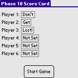
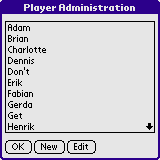
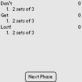
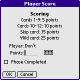
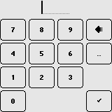
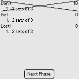
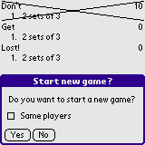
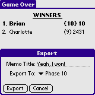

Phase 10 Score Card (PXSc) is a electronic score card for the card game Phase 10 by Ravensburger Spielverlag. You must have the original version of Phase 10 for PXSc to be of any interest to you.
Installation of PXSc is no more different than installation of any other Palm OS program:
When the synchronization is done you will have a 'PXSc' icon in the Unfiled category on your Palm PDA. Feel free to move Kasino to another category.
To use PXSc as a score card ... launch PXSc.
 When starting a new game you have to select up to 6 players. You must at least select 2 players before starting a new game. Click the box next to the Player labels to fill that spot with a player name.
 The names of the players is added in the Player Administration manager. Click New to add a new player. Select a player name and click Edit to edit a player name. Click OK to go back.
 When playing all players, phases and scores is shown. When a phase is complete, tap on a player name to enter point and phase info.
 Enter the points earned by the player in the Points field. If the player completed the phase without earning any points, enter a 0 (zero) in the Points field. Check the Phase Completed checkbox if the player completed the phase.
Tap the keyboard icon to bring up a numeric keyboard - for easier score entry.
 When all players have been evaluated, click Next Phase to begin the next phase. When a player completes all phases a summary screen is shown (not shown).
 During the game you can select the New Game option in the menu to start all over. Check the Same players checkbox to keep the players.
 When a game has ended the final scores can be exported to the Memo pad. Enter something suitable in the Memo Title field and select the appropriate category - then hit Export.